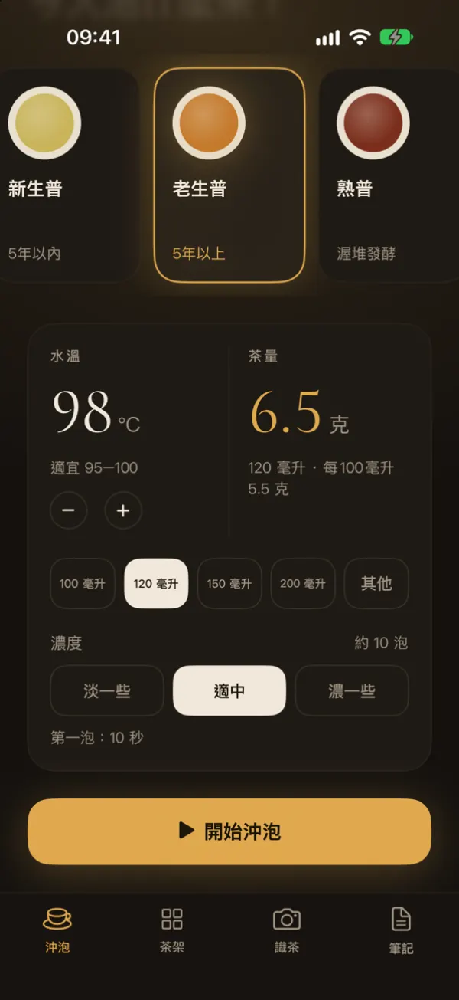
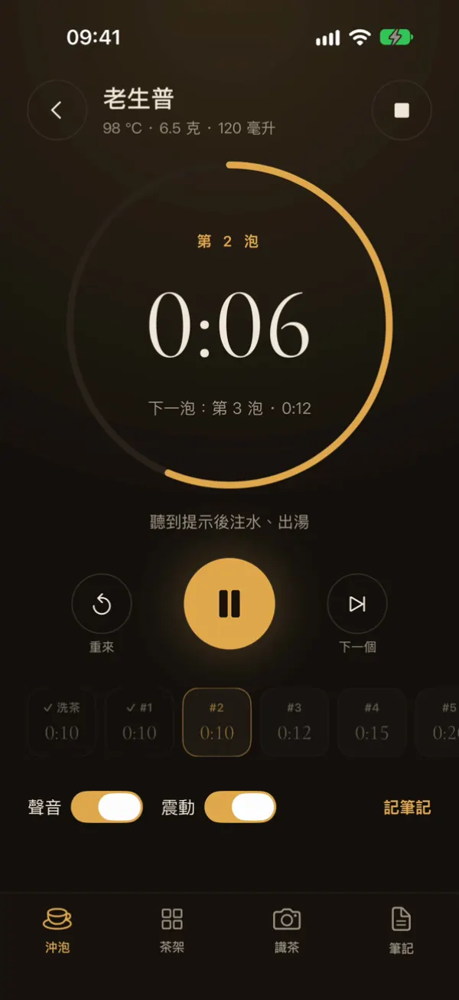
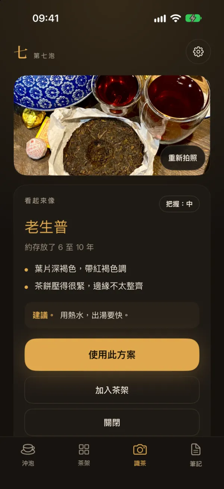
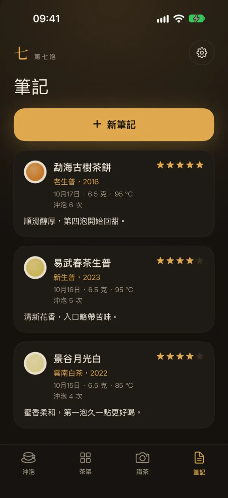

投茶量與水溫
選擇茶和茶具，應用程式會算出投茶克數，並顯示合適的水溫。
功夫茶計時器
第七泡會依照你的茶和茶具算出投茶量和水溫，再為洗茶和每一泡計時。
免費使用。可選購 Plus，獲得更多拍照辨識次數。
部分國家和地區的 App Store 尚未上架本應用程式。

功能
為夜間泡茶而設計：深色介面，大字體數字，沒有多餘干擾。

選擇茶和茶具，應用程式會算出投茶克數，並顯示合適的水溫。
圓環計時器依序為洗茶和每一泡計時。鈴聲和震動提醒你出湯。

拍攝一至三張茶葉或包裝的照片。結果僅為估計，並非保證。

用茶架整理你的茶，記錄每一次沖泡。茶架和筆記保存在你的手機上。
左右滑動，查看更多畫面。
五種茶
應用程式從這些參數開始。水溫、茶具和濃度都可以調整。點按有指南的茶，可查看詳細說明。
計時器、茶架和筆記均免費。每月提供一定次數的免費拍照辨識。
選用訂閱，提供更多拍照辨識次數。購買前，應用程式內會顯示價格和次數上限。
無需帳號，沒有廣告，不做追蹤。只有在你同意後，照片才會傳送至人工智慧服務。 隱私權政策.
支援繁體中文、簡體中文、英文與烏克蘭文。